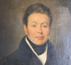

Bienvenue sur le site de la Famille Saint-Léger / Wattinne
Bienvenue sur le site de la Famille Saint-Léger / Wattinne

Philippe est né en 1787, juste avant la révolution française. Par son travail, son engagement politique et son investissement industriel, il a changé sa destinée. Non seulement la sienne, mais aussi la destinée et l'histoire de la famille sur des générations !
4 générations plus tard, Claude, fut un héros de la 1° et de la 2 guerre mondiale et un grand industriel, comme ses pères.

Leur histoire, ainsi que l'histoire des branches qui sont venues enrichir notre famille à chaque mariage, vient fonder et nourrir notre propre histoire personnelle.
Au fil des générations et des mariages, la famille remonte jusqu'au Moyen-Âge — et même jusqu'à Hugues Capet, premier roi des Francs, né en 939. Ce site rassemble récits, mémoires, correspondances et photos de famille sur plus de 10 siècles d'histoire.